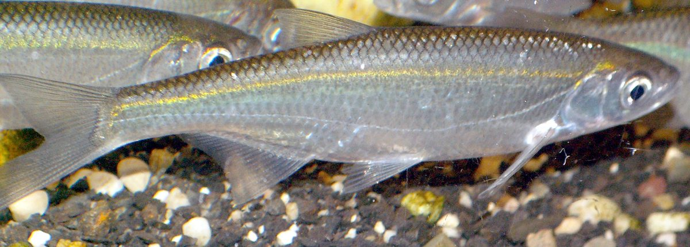

Biologia i rozpoznawanie
Wygląd i rozpoznawanie
Ukleja (Alburnus alburnus) to niewielka ryba karpiowata o wydłużonym, silnie bocznie spłaszczonym ciele i drobnych, łatwo odpadających łuskach, które pokrywa charakterystyczna, lśniąca srebrzysta powłoka — to właśnie ona nadaje rybie metaliczny, niemal lustrzany połysk. Grzbiet jest ciemny, zielonkawoniebieski, a boki i brzuch jaskrawo srebrne. Pysk uklei jest wyraźnie skierowany ku górze, co zdradza jej przypowierzchniowy tryb życia i zbieranie pokarmu spod lustra wody. Płetwa odbytowa jest długa, z liczną liczbą promieni, co odróżnia ją od podobnych gatunków. Ukleję najczęściej myli się z młodą płocią, wzdręgą, a przede wszystkim z ukleją smugą (rzadszą) oraz z drobnym leszczem — od tych ryb odróżnia ją smukła sylwetka, wywinięty ku górze pysk i wyjątkowo delikatne, sypiące się w dłoni łuski. Dorasta zwykle do 12–15 cm, rzadko przekracza 20 cm.
Środowisko i występowanie w Polsce
Ukleja jest gatunkiem pospolitym i szeroko rozpowszechnionym w całej Polsce — spotyka się ją niemal wszędzie tam, gdzie woda jest w miarę czysta i natleniona. Zasiedla jeziora wszystkich typów, zbiorniki zaporowe, wolno i średnio płynące rzeki nizinne, kanały, starorzecza, a także wysłodzone strefy Bałtyku, Zalewu Szczecińskiego i Wiślanego. Najchętniej trzyma się otwartej toni i strefy przypowierzchniowej, często w wielkich, ruchliwych ławach liczących setki i tysiące osobników, które przemieszczają się tuż pod lustrem wody. Latem ukleje gromadzą się przy pomostach, mostach, w portach i przy dopływach, gdzie łatwo o pokarm znoszony przez prąd i wiatr. Preferują wody o umiarkowanej żyzności, ale tolerują szeroki zakres warunków, dzięki czemu w wielu zbiornikach należą do najliczniejszych ryb w całym ekosystemie.
Biologia i tarło
Ukleja dojrzewa płciowo wcześnie, zwykle w drugim–trzecim roku życia, i należy do ryb krótko żyjących — rzadko dożywa więcej niż sześć–osiem lat. Tarło odbywa się późną wiosną i wczesnym latem, najczęściej od maja do lipca, gdy woda ogrzeje się do około 15–18 stopni, i ma charakter porcyjny — samica składa ikrę w kilku turach, na roślinach, kamieniach i twardym podłożu przy brzegu, często z wielkim pluskiem w płytkiej wodzie. W okresie tarła samce pokrywają się drobną wysypką tarłową. Płodność uklei jest wysoka jak na jej rozmiary, a szybkie dojrzewanie i liczne tarło sprawiają, że gatunek utrzymuje ogromne, stabilne populacje. To właśnie ta liczebność czyni ukleję fundamentem bazy pokarmowej w wodach — masa drobnych, srebrzystych ryb w toni jest naturalnym „paszowym" zasobem całego zbiornika.
Żerowanie w sezonach
Ukleja żeruje głównie w strefie przypowierzchniowej, zbierając z lustra i spod niego owady, ich larwy, plankton zwierzęcy, drobne skorupiaki oraz cząstki organiczne znoszone przez prąd i wiatr. Wiosną, po tarle, żeruje bardzo intensywnie na płyciznach i przy brzegach, reagując błyskawicznie na każdą drobną przynętę. Latem jest najaktywniejsza — w ciepłe, słoneczne dni ławy uklei wręcz kotłują się przy powierzchni, atakując wpadające do wody owady, a bicie ryb widać z daleka. Jesienią, wraz z ochłodzeniem wody, ukleje schodzą nieco głębiej i zbijają się w większe, zwarte stada, choć nadal chętnie żerują w toni. Zimą pozostają w skupiskach w głębszych partiach zbiornika i żerują znacznie oszczędniej, choć bywają łowione spod lodu na najdrobniejsze przynęty. Ich całoroczna, przewidywalna aktywność czyni je łatwym celem zarówno dla drapieżników, jak i dla wędkarzy.
Przepisy, metody i taktyka
Przepisy krajowe i zasady lokalne
Przepisy krajowe: Wody śródlądowe: § 6–7 nie ustanawia krajowego wymiaru ani okresu; sprawdź zasady lokalne. Źródło: Dz.U. 2023 poz. 1373, § 6–7
Granica okresu ochronnego: jeżeli pierwszy lub ostatni dzień okresu przypada w dzień ustawowo wolny od pracy, okres skraca się o ten dzień (§ 7 ust. 2); wyjątkiem jest całoroczna ochrona jesiotra.
Przed połowem: sprawdź aktualny regulamin i zezwolenie dla konkretnej wody. Wymiar, okres, limit lub zakaz lokalny może być ostrzejszy; brak wartości krajowej nie oznacza zgody na zabranie ryby.
Metody i przynęty
Ukleję łowi się przede wszystkim na bardzo lekki zestaw spławikowy — bat lub krótką tyczkę, delikatny, smukły spławik o wyporności 0,2–0,8 g, cienką żyłkę główną 0,08–0,12 mm, krótki przypon i mały haczyk numer 16–22. Ponieważ ryba żeruje tuż pod powierzchnią, przynętę prowadzi się płytko, zaledwie kilkanaście centymetrów pod lustrem wody, a często wręcz w samej warstwie podpowierzchniowej. Klasyczną przynętą jest pojedyncza pinka, drobny biały robak, ochotka lub maleńki kęs ciasta; sprawdza się także łowienie „na ślinę" — na goły, wilgotny haczyk lekko zaślinionym palcem, na który ukleje reagują zaskakująco chętnie. Skuteczne bywają też miniaturowe muchy suche i mokre podawane na lekkim zestawie muchowym, gdy ryby biją w owady przy powierzchni. Zasada jest prosta: im drobniejszy i delikatniejszy zestaw, tym więcej brań i pewniejsze zacięcia tej maleńkiej, szybkiej ryby.
Taktyka łowienia
Łowienie uklei to przede wszystkim szybkość i rytm, dlatego jest znakomitym treningiem koordynacji, tempa i precyzji zacięcia — nieocenionym zwłaszcza dla zawodników spławikowych. Kluczem jest utrzymanie ławy w łowisku przez częste, oszczędne donęcanie drobną, jasną, powoli opadającą zanętą podawaną małymi szczyptami tuż przy powierzchni; chmura opadających cząstek ściąga ukleje i zatrzymuje je w miejscu połowu. Przynętę prowadzi się płytko i podaje szybko, a zacięcie musi być natychmiastowe, lecz bardzo delikatne, z nadgarstka — ukleja ma mały, miękki pysk i łatwo ją spudłować lub urwać. Warto eksperymentować z głębokością, bo ryby potrafią żerować raz przy samym lustrze, raz nieco głębiej. Ze względu na łagodne branie i błyskawiczne tempo, łowienie uklei jest wyśmienitą, angażującą zabawą dla dzieci i idealnym pierwszym doświadczeniem z wędką, które niemal gwarantuje pierwszą złowioną rybę.
Wartość kulinarna
Mięso uklei jest smaczne i tłuste, ale ryba jest bardzo drobna i oścista, przez co jej wartość kulinarna jest ograniczona i regionalna. Tradycyjnie ukleje przyrządza się w całości, gęsto nacinane i smażone na chrupko w głębokim tłuszczu, tak by drobne ości zmiękły — w takiej formie bywają lokalnym przysmakiem, jedzonym niemal jak frytki rybne. Sprawdzają się także marynowane w occie, wędzone na drobno lub jako składnik smażonej „drobnicy" mieszanej. W praktyce jednak większość wędkarzy nie zabiera uklei na stół, lecz wykorzystuje ją inaczej — jako doskonałego żywca na drapieżniki albo po prostu wypuszcza. Warto pamiętać, że ze względu na kluczową rolę pokarmową uklei w ekosystemie masowe jej pozyskiwanie nie ma większego uzasadnienia kulinarnego, a rozsądny wędkarz traktuje tę rybę raczej jako element łowiska niż jako zdobycz na patelnię.
Ciekawostki
Ukleja odegrała zaskakującą rolę w historii przemysłu — z jej srebrzystej łuski pozyskiwano dawniej tak zwaną esencję perłową (essence d'orient), lśniącą substancję zawierającą guaninę, którą wykorzystywano do wyrobu sztucznych pereł. Proceder ten, nazywany „srebrzeniem", wymagał ogromnych ilości ryb — do uzyskania niewielkiej porcji esencji zużywano tysiące uklei, a łuski płukano i przerabiano na perłową zawiesinę pokrywającą szklane koraliki. Poza tym ukleja jest modelowym przykładem gatunku „paszowego": jej wielkie ławy stanowią podstawę diety szczupaka, okonia, sandacza, bolenia, a także ptaków rybożernych, takich jak rybitwy i mewy. Bicie uklei przy powierzchni to dla wędkarza spinningowego czytelny sygnał obecności polujących drapieżników. Ukleja chętnie krzyżuje się też z innymi karpiowatymi, a jej lśniące ciało od wieków fascynuje obserwatorów wód.
FAQ — najczęstsze pytania
Kiedy najlepiej bierze ukleja?
Ukleja bierze najlepiej w ciepłej połowie roku, od późnej wiosny po wczesną jesień, a szczyt aktywności przypada na słoneczne, ciepłe letnie dni, gdy ławy ryb wręcz kotłują się przy powierzchni, atakując owady. Żeruje przez cały dzień, choć wyjątkowo intensywnie w godzinach okołopołudniowych i popołudniowych. Zimą jest znacznie mniej aktywna, schodzi głębiej i bierze oszczędnie, dlatego to raczej ryba sezonu ciepłego.
Jak łowić ukleję „na ślinę"?
Łowienie „na ślinę" polega na podawaniu gołego, małego haczyka lekko zwilżonego śliną z palca, bez żadnej przynęty. Ukleje, żerujące przy powierzchni i reagujące na każdy drobny, jasny obiekt, atakują taki haczyk odruchowo. Stosuje się bardzo lekki zestaw spławikowy prowadzony płytko tuż pod lustrem wody i błyskawiczne, delikatne zacięcie. To skuteczna, zaskakująco prosta i efektowna metoda, która świetnie sprawdza się przy nauce łowienia dzieci.
Czy ukleja to dobra ryba dla dziecka na start?
Tak, ukleja to jedna z najlepszych ryb na pierwsze wędkarskie doświadczenie. Występuje licznie, bierze często i szybko, a łowienie jej nie wymaga drogiego sprzętu — wystarczy prosty bat, lekki spławik i drobna przynęta. Częste brania utrzymują uwagę i emocje dziecka, niemal gwarantując sukces, a delikatne zestawy uczą precyzji i tempa zacięcia. Dodatkowo mała ryba jest łatwa i bezpieczna do odhaczenia oraz szybkiego wypuszczenia.
Do czego wykorzystuje się ukleję jako żywca?
Ukleja jest cenionym żywcem na drapieżniki, ponieważ stanowi naturalny pokarm szczupaka, okonia, sandacza i bolenia. Jej srebrzysty połysk i żywy ruch skutecznie prowokują ataki. Łowi się ją na miejscu na lekki spławik i podaje na zestawie żywcowym pod spławikiem lub przy dnie. Trzeba jednak pamiętać, że ukleja jest delikatna i szybko śnie, dlatego wymaga przewiewnego wiaderka i częstej wymiany wody, a pozyskiwanie żywca bywa odrębnie regulowane regulaminem łowiska.
Źródła i weryfikacja
Prawo: punktem wyjścia dla krajowych wymiarów i okresów ochronnych w powierzchniowych wodach śródlądowych jest § 6–7 rozporządzenia Dz.U. 2023 poz. 1373 (źródło zweryfikowano 2026-07-20). Przed połowem sprawdź zezwolenie, regulamin i komunikaty gospodarza tej wody; mogą wprowadzać dodatkowe, ostrzejsze warunki, lecz nie zastępują aktu. Praktyka redakcyjna: opis metod i taktyki ma charakter edukacyjny.
Tożsamość biologiczna i źródła
Nazwa łacińska: Alburnus alburnus. Grupa atlasu: spokojny żer. Alias: bleak.
Źródła: FishBase: Alburnus alburnusGBIF: Alburnus alburnusIUCN Red List: Alburnus alburnus. Dostęp: 2026-07-17. Zakres: tożsamość taksonomiczna i nazewnictwo oraz, gdy wskazano, ocena ochrony; bez potwierdzenia lokalnego występowania, stanu łowiska ani zasad połowu.
Porównanie taksonomiczne
Porównaj z kartą Boleń pospolity. Obie karty prowadzą do osobnych rekordów źródłowych; porównanie nie jest kluczem oznaczania w terenie ani gwarancją wyniku połowu.
Komentarze